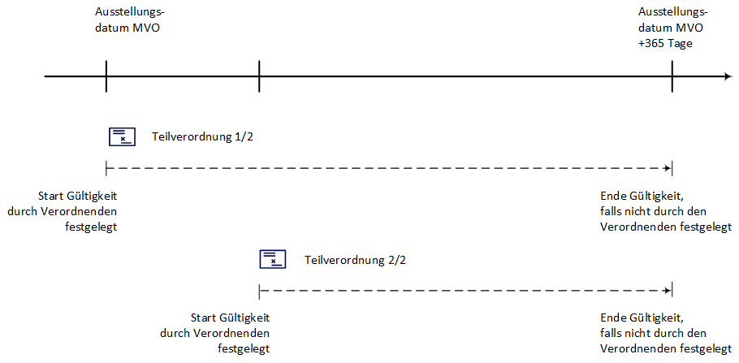

E-Rezept API Dokumentation für Versicherte - Mehrfachverordnungen
Hier dokumentiert die gematik die Nutzung der Schnittstellen rund um das E-Rezept aus Sicht der Versicherten, die ihre E-Rezepte verwalten und einlösen möchten.
Mehrfachverordnungen sollen die Versorgung mit Arzneimittel für chronisch Kranke erleichtern. Für Versicherte, die eine kontinuierliche Versorgung mit einem bestimmten Arzneimittel benötigen, können Vertragsärzte Verordnungen ausstellen, nach denen eine nach der Erstabgabe bis zu dreimal sich wiederholende Abgabe erlaubt ist.
Aus der Mehrfachverordnung ergeben sich Vorteile für Patienten und die Abläufe in Arztpraxen, da die Rezepte für Dauermedikationen im Voraus ausgestellt werden können und somit Wege zur Arztpraxis zum Rezepte abholen entfallen.
Fachliches Konzept
Eine Mehrfachverordnung besteht aus mindestens 2 bis maximal 4 Teilverordnungen. Jede Teilverordnung einer Mehrfachverordnung ist ein vollständiges E-Rezept mit eigenem E-Rezept-Token. Das bedeutet, dass jede der Teilverordnungen durch den eigenen E-Rezept-Token auch einzeln durch den Versicherten, ggf. in verschiedenen Apotheken, eingelöst werden kann.
Der Arzt/Zahnarzt kann das Ende der Gültigkeitszeitraumes einer Teilverordnung festlegen. Falls das Ende nicht festgelegt wird, dann gilt die Teilverordnung bis 365 Tage nach dem Ausstellungsdatum der Mehrfachverordnung. Die folgende Abbildung zeigt eine mögliche Variante für die Gültigkeitszeiträume zweier Teilverordnungen einer Mehrfachverordnung.

Datenmodell der Mehrfachverordnung
Eine Mehrfachverordnung besteht aus 2 bis max. 4 unabhängigen Teilverordnungen. Jede Teilverordnung ist ein (zahn)ärztlich signiertes E-Rezept gemäß der KBV-Festlegungen für einen Verordnungsdatensatz.
| Beispieldatensätze finden sich im Unterverzeichnis samples/MVO_KBV_1.0.2_.zip |
Die folgenden Felder sind dabei charakteristisch für die Teilverordnungen einer Mehrfachverordnung
Kennzeichen einer Verordnung als Teilverordnung einer Mehrfachverordnung
MedicationRequest.extension:Mehrfachverordnung.extension:Kennzeichen = trueNummer des Rezepts der Mehrfachverordnung ("Zähler")
MedicationRequest.extension:Mehrfachverordnung.extension:Nummerierung.value[x]:valueRatio.numeratorGesamtzahl der Teilverordnungen in der Mehrfachverordnung ("Nenner")
MedicationRequest.extension:Mehrfachverordnung.extension:Nummerierung.value[x]:valueRatio.denominatorStart der Gültigkeit
MedicationRequest.extension:Mehrfachverordnung.extension:Zeitraum.value[x]:valuePeriod.startEnde der Gültigkeit
MedicationRequest.extension:Mehrfachverordnung.extension:Zeitraum.value[x]:valuePeriod.end| Patienten haben zu jeder Zeit die Möglichkeit, alle Teilverordnungen einer Mehrfachverordnung über die E-Rezept-App einzusehen und die Einlöseinformationen als Datamatrix oder Zuweisung an Apotheken zu teilen (und bei Bedarf zu löschen). |
Apotheken sind VOR dem Gültigkeitsbeginn valuePeriod.start nicht berechtigt, eine Teilverordnung herunterzuladen.
|